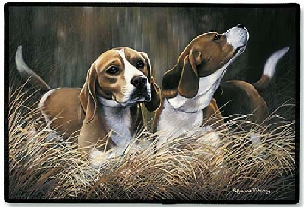

Питомник "Эльф Маро" 
заводчик -Шкварникова Мария Евгеньевна
т. 8 916 136 74 62
Бигль - это добрая, ласковая и веселая собака. Прирожденный исследователь неведомого, он так и норовит отвязаться и убежать, поэтому за ним необходим особый контроль; лучше всего не спускать его с поводка во время прогулки. Бигль неплохо ладит с незнакомыми людьми и другими животными, Бигль - энергичная собака, предпочитающая находиться среди большого числа людей. Бигль обожает общество своего хозяина. Он также нуждается в активном времяпрепровождении.
Бигли с радостью относятся к дальним прогулкам, любят бегать, охотники по натуре, на прогулке они постоянно принюхиваются к следам, сгорая от желания двинуться по любому из них . Это занятие настолько поглощает их внимание, что они способны забыть обо всем. Вот почему владельцам, выгуливающим данных собак, следует проявлять повышенное внимание (впрочем, этот совет будет не лишним и для держателей других пород гончих).
Бигль - умный и преданный компаньон. Он очень чистоплотен и не нуждается вследствие этого в частых купаниях. Добавим, что если эти собаки хорошо выучены, они великолепно общаются со всеми членами семьи, особенно с детьми. Некоторые особи данной породы иногда (но очень редко!) могут проявить агрессивность по отношению к незнакомым людям или собакам.
"Эта собака лучше себя чувствует, живя в частном доме. Бигли выносливы, неприхотливы, не требуют сложного ухода и отличаются прекрасным здоровьем